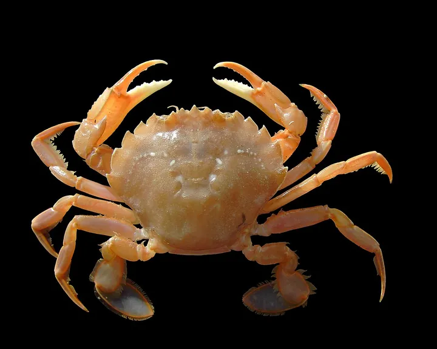

Mantelmöwe oder Heringsmöwe?
Beide Möwen haben einen dunklen Rücken. Die Mantelmöwe ist viel größer, fast schwarz und hat rosa Beine, die Heringsmöwe ist schlanker, schiefergrau und hat gelbe Beine.
Kurz gesagt
Riesig mit rosa Beinen: Mantel. Schlank mit gelben Beinen: Hering.


Die Unterschiede
| Mantelmöwe | Heringsmöwe | |
|---|---|---|
| Größe | 64 bis 79 cm, sehr massig | 52 bis 67 cm, schlank |
| Rücken | fast schwarz | schiefergrau |
| Beine | blass rosa | gelb |
| Schnabel | sehr dick | schlanker |
| Beste Zeit | Herbst und Winter | März bis Oktober |
| Ruf | sehr tiefes, heiseres „ouk-ouk-ouk“, deutlich tiefer als bei allen anderen Möwen | wie die Silbermöwe, aber tiefer und rauer: „kau-kau-kau“ |
Von Nico Schober · Stand: November 2026 · Fehler entdeckt? Schreib mir
Weitere Doppelgänger
-

Foto: Lycaon (öffnet in neuem Fenster), CC BY-SA 3.0 (öffnet in neuem Fenster) 
Foto: Hans Hillewaert (öffnet in neuem Fenster), CC BY-SA 4.0 (öffnet in neuem Fenster) Strandkrabbe oder Gemeine Schwimmkrabbe?
Beide sind mittelgroße Krabben im Flachwasser. Die Schwimmkrabbe hat am letzten Beinpaar flache Paddel, die Strandkrabbe spitze Beine.
-

Foto: Joymaster (öffnet in neuem Fenster), Gemeinfrei 
Foto: JackyM59 (öffnet in neuem Fenster), CC BY-SA 4.0 (öffnet in neuem Fenster) Ohrenqualle oder Kompassqualle?
Beide sind groß und hell. Die Ohrenqualle hat vier Ringe in der Mitte und ist harmlos, die Kompassqualle braune Streifen und brennt.
-

Foto: Charlotte Kirchner (öffnet in neuem Fenster), CC BY 4.0 (öffnet in neuem Fenster) 
Foto: NASA (öffnet in neuem Fenster), gemeinfrei Weißschnauzendelfin oder Großer Tümmler?
Zwei große Delfine der Nordsee. Der Weißschnauzendelfin hat eine helle Schnauze und weiße Flecken an den Flanken, der Große Tümmler ist einfarbig grau.